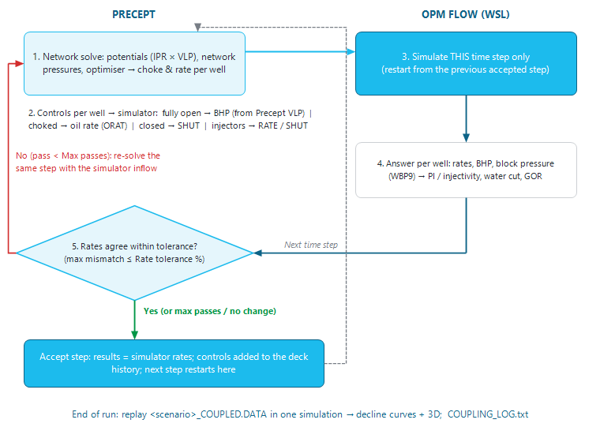

|
Network ↔ reservoir simulator coupling
1. Overview — what the coupling does
In a coupled forecast the reservoir is a 3D simulation model run by OPM Flow, instead of a material-balance tank. Precept still does everything it does in a Material Balance forecast — well lift curves (VLP), the gathering network, the facility constraints and the optimiser — but at every forecast time step it asks the simulator how the reservoir answers to the wells' operating conditions, and uses that answer as each well's inflow.
The two models are solved together, time step by time step, until they agree on every well's rate. The result is a forecast that honours both the surface network (back-pressures, capacities, choking, shut-ins) and the 3D reservoir physics (pressure depletion around each well, water and gas breakthrough, injection support).
The simulation model is the deck built for the scenario in the 3D model builder (see Simulation deck builder). For the overall picture, see Reservoir simulation.
2. Turning it on
Open Settings and, in the "Potentials" box, set "Decline" to "Simulation". The setting is saved per scenario. A "Simulation" scenario uses the same well and network models as a "Material Balance" scenario (see Material Balance) — the simulator replaces only the tank.
Then run the forecast as usual with "Deterministic" on the main ribbon.
3. Requirements
Precept checks these when the forecast starts. A "Simulation" scenario never falls back to material balance: if one of them is not met, a message explains why and the forecast is stopped ("The forecast was stopped.").
|
Requirement
|
Message if it is not met
|
|
A deterministic forecast ("Deterministic"). Probabilistic and other calculation modes are not supported yet.
|
"A Simulation scenario runs as a deterministic forecast only for now (...)"
|
|
The Precept optimiser (not GAP).
|
"A Simulation scenario runs with the Precept optimiser only."
|
|
Oilfield units: the asset's pressure unit must be psig. Metric assets are not supported yet.
|
"The simulator coupling supports oilfield units (psig) only for now."
|
|
A Simulation folder for the scenario, set in the 3D model builder ("Run settings").
|
"No Simulation folder is set for this scenario. Set it in the 3D model builder (Run settings) and generate the deck."
|
|
The scenario's .DATA deck, built in the 3D model builder (conceptual model): grid, PVT, relative permeabilities, initial conditions and the wells placed on the grid. Its SCHEDULE must use DATES (the builder always does) and contain the wells (WELSPECS).
|
"No simulation deck found: ... Generate it in the 3D model builder first." or "The simulation deck can't be used for the coupling: ..."
|
|
OPM Flow installed in WSL on this PC. The coupling always runs flow through WSL, even when "Run settings" is set to a custom command.
|
"The simulator failed on <date> (pass n): ..."
|
The wells are matched by name: a well of the Precept network is coupled only if the deck has a well of the same name. Network wells that are not in the deck keep Precept's own (material-balance) inflow.
4. Before the first time step — the deck is regenerated
When the forecast starts, Precept first regenerates the scenario's deck from the 3D model builder inputs, exactly as "Generate .DATA" does: the wells are placed again on the current grid (COMPDAT) and the SCHEDULE is rebuilt from the scenario's current drilling sequence, shutdowns and constraints. A progress window "Generating .DATA" shows the stages. This way a shutdown or a drilling-date change made since the deck was last generated is taken into account.
Hand edits made to the .DATA ("Edit .DATA") are overwritten at this point, as with "Generate .DATA". If the deck cannot be regenerated, the message "Could not regenerate the simulation deck (SCHEDULE) before the coupled run: ... The forecast was not started." appears.
5. What happens at each time step

Figure 1 — The coupling loop for one forecast time step. Precept and the simulator pass controls and inflow back and forth until their rates agree; the accepted step becomes the restart point of the next one.
For each forecast time step:
1.Network solve. Precept computes the wells' potentials, solves the network pressures and runs the optimiser, exactly as in a Material Balance forecast (including the network pressure / allocation loop, see Network hydraulics). The result is a choke opening and a rate for every well.
2.Controls to the simulator. Each coupled well receives one control: a producer the optimiser leaves fully open runs on a bottom-hole pressure — Precept's own BHP, from its VLP at the solved manifold pressure; a producer choked back runs on its allocated oil rate (with the manifold pressure as THP limit); a well the optimiser closes is shut. Injectors run on their allocated water or gas injection rate, or are shut. The deck's own limits for the well (BHP limit, VFP table, artificial lift) are kept. Only controls that change are written.
3.Simulator run. OPM Flow runs this time step only, restarting from the end of the previous accepted step. The deck's own events at that date (new wells, shut-ins, control changes) are applied first.
4.Inflow back to Precept. For each well Precept reads the simulator's answer: the average rates over the step, the bottom-hole pressure and the pressure of the cells around the well. From them it derives the well's productivity index (liquid rate ÷ drawdown), its injectivity (water injectors) or its c factor with n = 1 (gas injectors), and its water cut and GOR. These replace the well's inflow and reservoir pressure in Precept.
5.Convergence check. Precept compares, well by well, its allocated rate (liquid for producers, injection for injectors) with the simulator's. The mismatch is the largest difference, in % of Precept's rate (a floor of 50 per day stops nearly-shut wells from dominating). If it is within the "Rate tolerance (%)", the step is accepted.
6.Otherwise Precept re-solves the same time step with the new inflow (potentials, network, optimiser) and runs the simulator again — a new pass — until the rates agree or "Max passes per timestep" is reached. If a pass changes nothing (same mismatch as the previous one), more passes cannot help and the loop stops early.
When a step is accepted:
•The forecast results stored for that step are the simulator's rates. Manifold, reservoir and field totals are built from the same numbers, so the database and the simulation agree.
•The reported reservoir pressure of each well is the simulator's pressure around the well at the start of the step; the field pressure is the simulator's field average pressure. Before the first simulator step, the initial pressure is shown.
•On the first step only, the model's initial oil and gas in place (STOIIP, OGIP) are saved as the scenario's hydrocarbon in place for its deterministic case.
•A step that has not converged after the maximum number of passes is accepted on its last pass and counted as "not converged".
5.1 Pressure limits taken from the deck
The simulator honours each well's BHP limit written in the deck (minimum BHP for a producer, maximum BHP for an injector). For the duration of the run, a producer with no minimum pressure constraint of its own in Precept (or an injector with no maximum pressure constraint) gets the deck's limit, converted to gauge. Without this, Precept could allocate rates the simulator cannot deliver and the passes would never agree. Your own constraints always win, and the values are restored at the end of the run. Each limit applied is listed in the log ("Limit from deck: ...").
6. Iteration settings
Open the 3D model builder ("3D model builder" in the "3D Modelling" group of the main ribbon) and click "Run settings". Under "Coupled forecast (Settings > Decline = Simulation):":
•"Max passes per timestep:" — the most simulator runs per time step (default 5, at least 1).
•"Rate tolerance (%):" — the step is converged when Precept's and the simulator's rates agree within this percentage (default 2, at least 0.1).
Click "Save". Both are stored per scenario, with the Simulation folder.
7. Following the run — the "Coupled run" window
When the coupling starts, a window "Coupled run - <scenario>" opens next to the forecast progress bar:
•The status line shows the date, the step ("step i of n") and the pass being run.
•The log lists the deck, the settings and the coupled wells, then one line per pass with its run time and mismatch — and, when the mismatch is above the tolerance, the worst well with Precept's rate, the simulator's rate and the simulator's BHP. OPM Flow's own output is streamed in between.
•At the end the status reads "Finished - N simulator runs, M steps not converged (log: COUPLING_LOG.txt)".
"Close" closes the window only; it does not stop the forecast. To stop the run, click "Stop" on the forecast progress bar: the simulator is stopped too, and nothing is saved. A single simulator run that lasts more than 30 minutes is stopped and stops the forecast.
8. Outputs
At the end of a complete run Precept replays the whole coupled forecast in a single simulation (status "Replaying the coupled run in one simulation (full results + 3D) ..."): one deck with every accepted control, without restarts. This gives full, continuous results and the 3D output.
|
Output
|
Content
|
|
Forecast results
|
The scenario's forecast, in the usual Precept results (Timeline, Charts...), with the simulator's rates and pressures.
|
|
<scenario>_COUPLED.DATA
|
The coupled run as one deck, in the Simulation folder, with its simulator outputs (.RSM, .PRT, .EGRID, .UNRST...). "3D model visualization" opens the most recent results, so after a coupled run it shows this one. The scenario name is made file-safe (characters other than letters, digits, - and _ become _).
|
|
Profiles saved
|
The replay's well profiles are saved into the decline curves (potentials) of the scenario's deterministic case — the case chosen in Settings, "Deterministic" box ("Run Sigma Low case", "Run Sigma Mid case" or "Run Sigma High case"; Mid by default). A progress window "Saving simulation as Decline curves (<case> case)" is shown.
|
|
Hydrocarbon in place
|
The model's initial STOIIP and OGIP, for the same case (Low = 1P, Mid = 2P, High = 3P).
|
|
COUPLING_LOG.txt
|
The coupling log (the lines of the "Coupled run" window without the simulator output), in the Simulation folder, with the total number of simulator runs, their total time and the number of steps not converged.
|
The intermediate runs (files named CPL_<step>_<pass>) are deleted as the forecast goes; only the restart point of the next step is kept. If the replay or the saving of the profiles fails, the forecast results are still complete and a warning says so ("The forecast results are complete, but ..."), pointing to the run report (.PRT).
9. Convergence reports
A coupled forecast iterates on two loops, and each has its own report:
•The simulator coupling (this page) — reported in the "Coupled run" window and in COUPLING_LOG.txt: each pass's mismatch, the worst well, and the count of steps not converged.
•The network pressure solve — the loop that settles the manifold pressures and the optimiser's allocation inside every pass. At the end of the forecast a window "Network pressure solve - convergence report - <scenario>" opens, but only if a time step did not converge or needed 10 passes or more (the cap is 15 passes per step). It lists every time step with its passes, status ("Converged", "NOT converged - slow", "NOT converged - oscillating"), relaxation and pressure changes. "Save as..." saves it as a text file; "Close" closes it. The non-converged steps and a summary line are also added to the warnings shown at the end of the run. See Network hydraulics.
10. Tips and troubleshooting
•"no change between passes, stopped" in the log usually means the simulator honours a limit that Precept does not know about (for example a BHP limit, or a well that cannot deliver its allocation). Look at the worst well named on the line above.
•Many steps not converged: raise "Max passes per timestep", or loosen "Rate tolerance (%)" slightly. Each extra pass is one more simulator run, so the run time grows with them.
•A simulator failure stops the forecast with the date and pass, and points to the run report (.PRT) of the failing pass in the Simulation folder.
•Before a long coupled run, generate the deck and run it once with "Run Deterministic" in the 3D model builder, to check that the model initialises and runs on its own.
•Gas lift stays Precept's: it is applied in Precept's well models, not simulated.
|